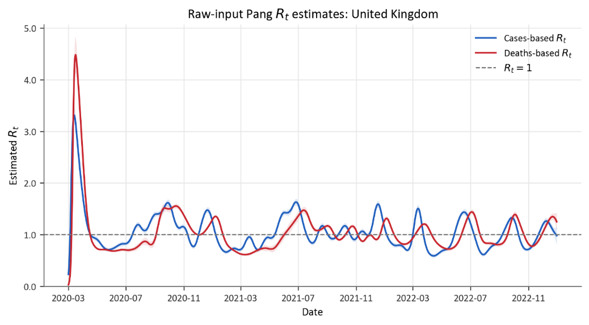

Profile
把复杂数据转化为
清晰的业务判断。
兼具网络空间安全与健康数据科学背景，能够从数据质量、分析方法和产品目标三个层面拆解问题。
2025–2027
曼彻斯特大学健康数据科学 · 理学硕士
2021–2025
厦门大学网络空间安全 · 工学学士
FEATURED
COVID-19 Rₜ 分析统计建模 · 敏感性分析 · 数据质量诊断
相同内容，不同气质。请重点比较信息结构、照片位置和整体氛围。
安静、克制、有个人叙事感
杨子越 · 数据分析与产品思维
我关注数据如何产生、模型如何影响结论，以及怎样把复杂分析转化为清晰、可执行的判断。
专业、直接、招聘者可以快速浏览
兼具网络空间安全与健康数据科学背景，能够从数据质量、分析方法和产品目标三个层面拆解问题。
清爽、科技感更强、突出代表项目
Health data scientist with a product mindset. I test assumptions, diagnose data quality, and explain what the evidence can support.
